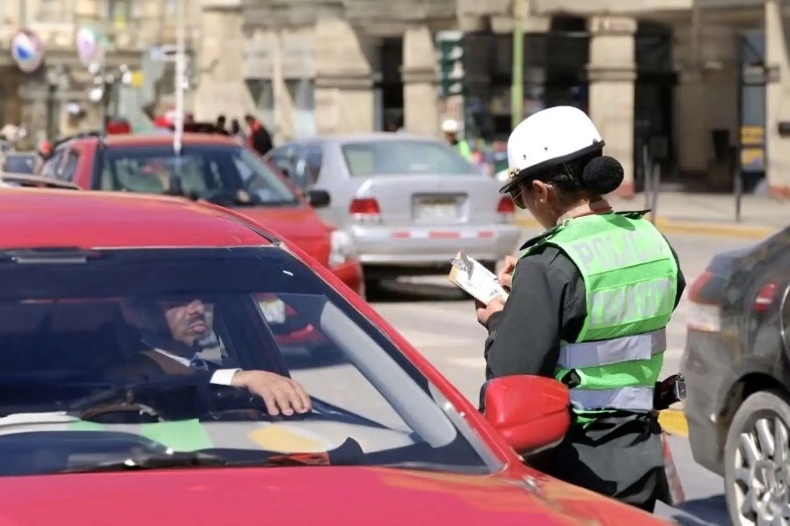

Consulta y Pago de Papeletas de Tránsito
Infracciones de Tránsito
Gestione el estado de las sanciones e infracciones al Reglamento Nacional de Tránsito y Transporte imponibles dentro de la jurisdicción de Lima Metropolitana.
Información Clave:
- Descuentos por pronto pago: Hasta 83% de descuento si se cancela dentro de los primeros 5 días hábiles contados desde el día siguiente de la notificación.
- Papeletas M1 y M2: Por ser faltas muy graves, no aplican a descuentos de ley.
- Requisitos para consulta: Número de Papeleta o Número de Placa del vehículo infractor.